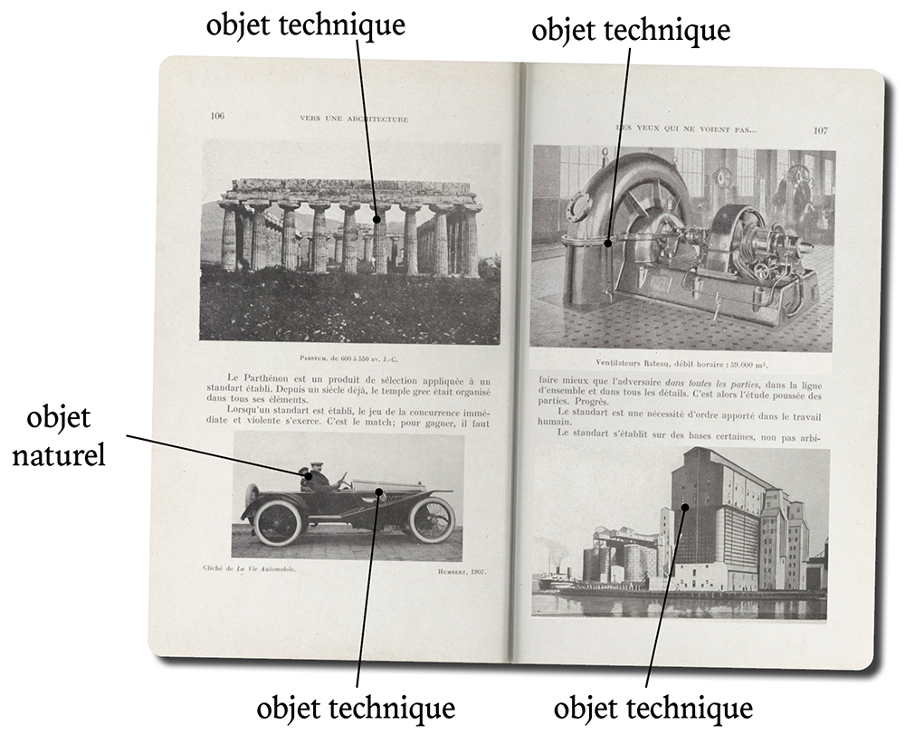
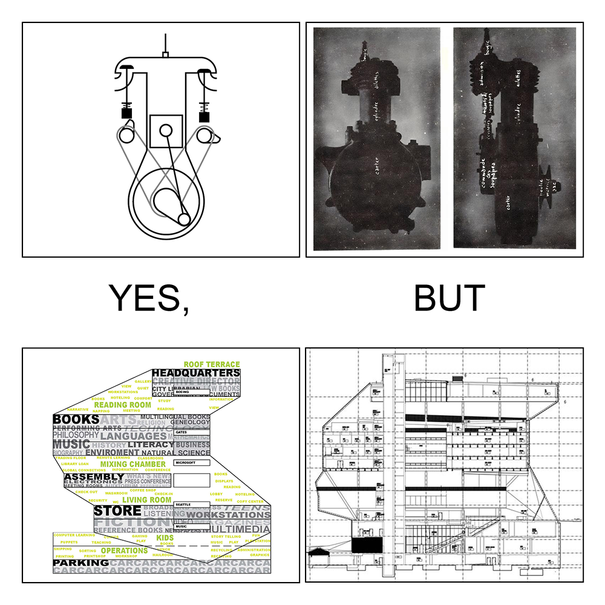
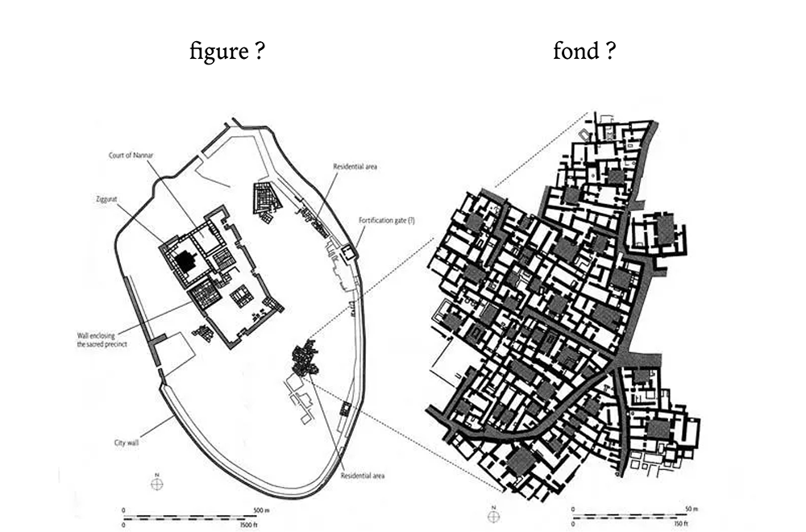
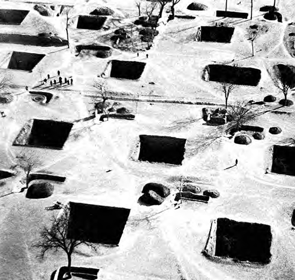
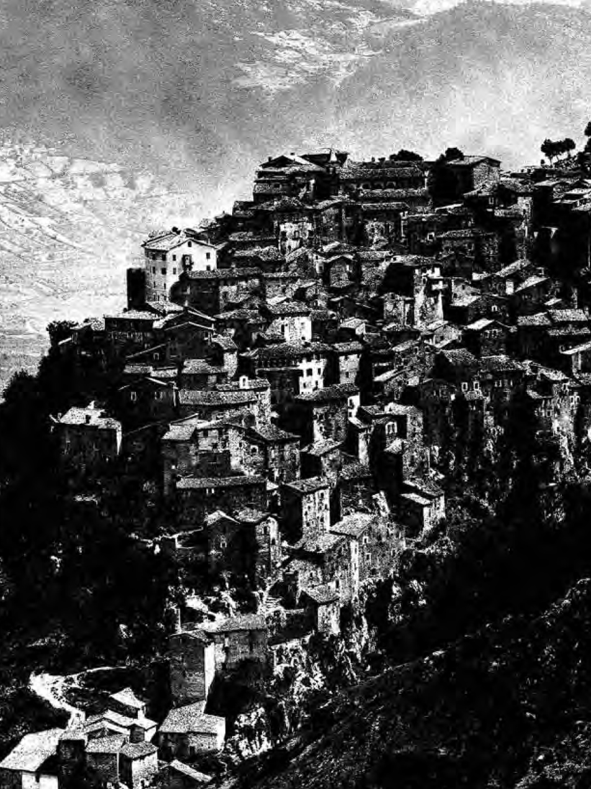
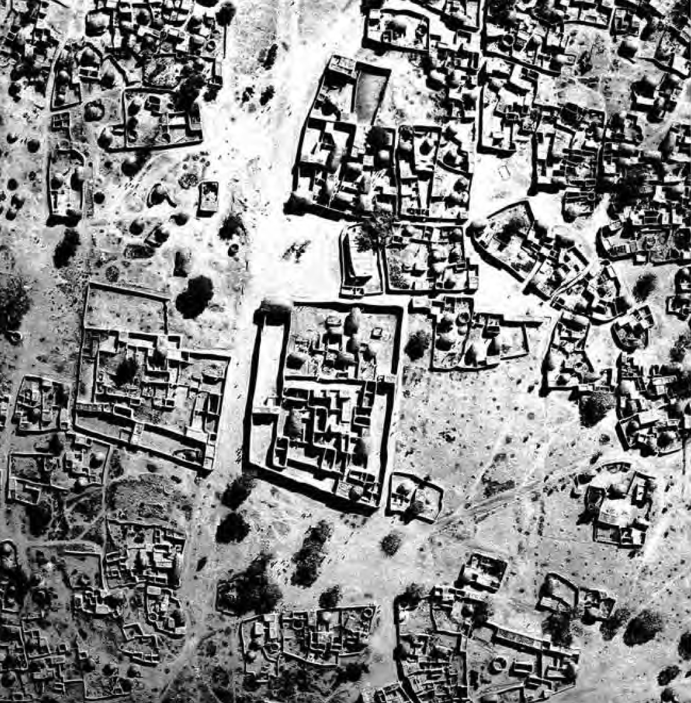
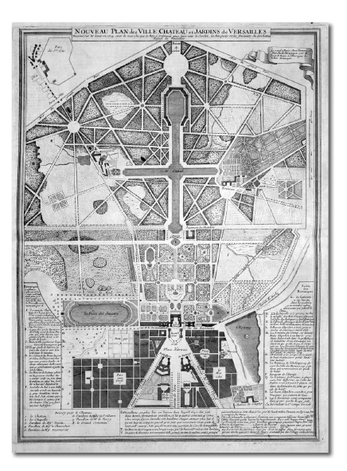
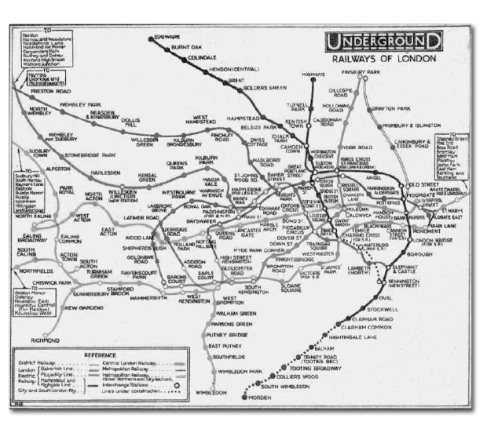
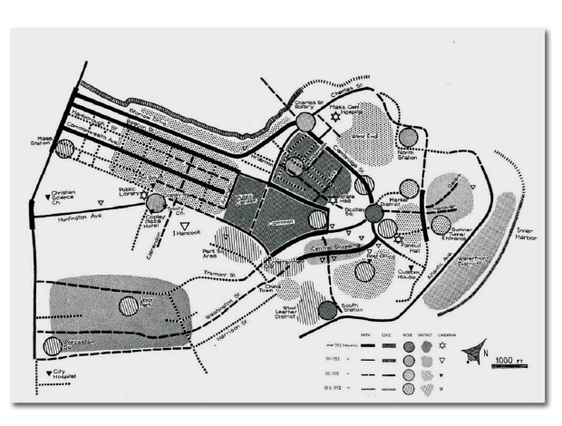
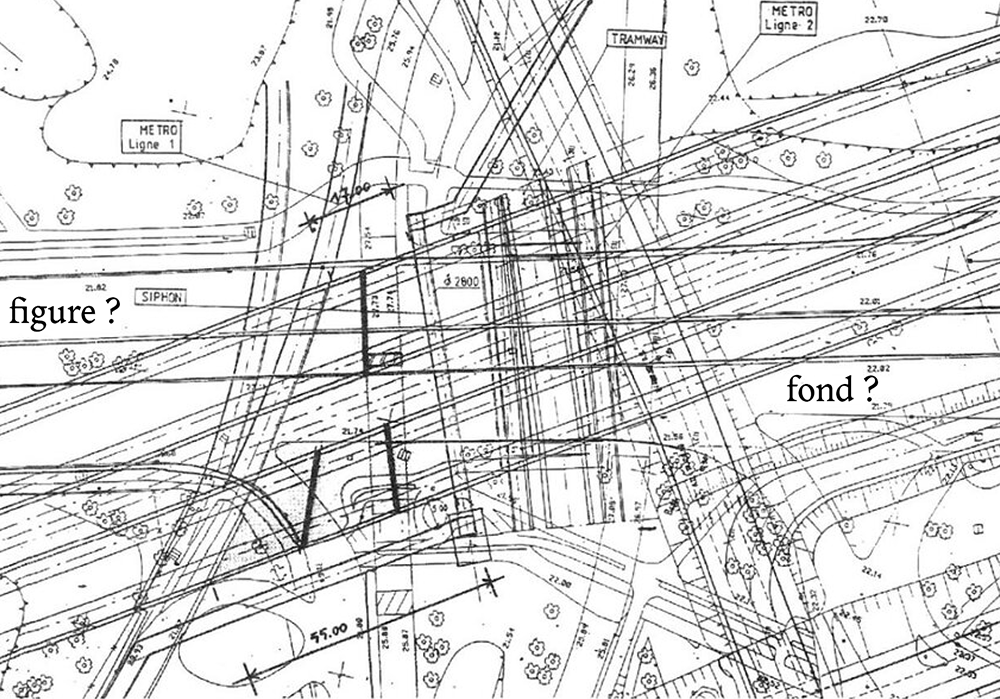

Objectification, Concrétisation & Rebond Magique, la ville comme objet technique
Hugo Forté
Club ASAP 11
septembre 2026
Temps de lecture : 15 min
Dans l’appel à participation pour ce club asap, nous proposions une première ligne de démarcation entre le conte pastoral et la légende urbaine : celle de la place de l’individu vis-à-vis du secret.
A l’occasion de ma participation au club, je voudrais explorer un peu plus cette piste, grâce au travail de Gilbert Simondon sur les objets techniques et l’apprentissage de la technique par les individus*.
C’est une participation qu’on pourrait qualifier de transpositrice, puisque son objectif est d’intégrer au champ de la discipline architecturale, un nouvel outil de pensée issu d’un autre domaine d’étude. Le but d’aujourd’hui est d’étudier 1. la possibilité et 2. l’opérance de penser l’architecture et la ville comme un objet technique.
* Gilbert Simondon, Du mode d’existence des objets techniques, Editions Aubier 1958
introduction aux objets techniques

Pour commencer, un objet technique tel que le définit Simondon est un dispositif – composé de plusieurs parties – qui permet à l’homme de réaliser une action sur le monde. L’objet technique se différencie de l’objet naturel par le fait qu’il a été conçu dans son entièreté.
Cette genèse téléologique est centrale dans la thèse de Simondon car c’est vis-à-vis de leur linéarité de fonctionnement qu’il va ensuite classer les objets techniques d’une même lignée, allant de l’objet abstrait à l’objet concret. Un objet abstrait fait agir ses parties les unes après les autres dans un rôle unique, là où un objet concret superpose des phases de fonctionnement de dispositifs multifonctions.
Dans un moteur à essence à quatre temps cela se passe ainsi :
1. Une soupape d’admission introduit un mélange air/combustible dans un cylindre.
2. Le mélange est comprimé dans le cylindre par la remontée du piston entrainée par la rotation du vilebrequin.
3. Une bougie d’allumage déclenche la combustion du mélange qui repousse donc le piston vers le bas, alimentant la rotation du vilebrequin.
4. La soupape d’évacuation s’ouvre et les gaz d’échappement quittent le cylindre.
L’objet technique abstrait est la directe réalisation de ce que Simondon appelle le schème d’organisation imaginé : les éléments accomplissent successivement, linéairement et uniquement leur fonction spécifique.
Cependant la construction réelle de l’objet technique force à faire face à trois contraintes auxquelles le schème mental échappait jusqu’alors. Ces contraintes amènent à ce que Simondon nomme la concrétisation de l’objet technique

La première épreuve est que l’existence de l’objet technique dans le monde réel le sort du vide conceptuel dans lequel le schème d’origine a été créé. Les parties du dispositif entrent donc en contact avec un milieu continu (air, sol, enveloppe, chaleur) qui agit sur le fonctionnement de l’objet. Par exemple si le cylindre chauffe trop longtemps, le métal peut se déformer.
Ce premier obstacle oblige alors le concepteur à sacrifier un peu de la pureté de son objet abstrait en lui ajoutant ce que Simondon appelle des structures défensives, c’est-à-dire de nouveaux éléments qui n’agissent pas dans le cycle de fonctionnement mais préviennent le dysfonctionnement des éléments actifs. Dans le cas de la surchauffe du cylindre, il peut s’agir simplement d’ailettes de refroidissement qui assurent une plus grande surface d’échange de chaleur avec l’environnement. Mais il peut arriver que la structure défensive soit elle-même un objet technique avec son propre ensemble de dispositifs, comme dans le cas d’un refroidissement par eau.
La seconde contrainte est celle du mode de production même des objets techniques qui ne peuvent rarement être construits exactement comme on les imaginait et qui nécessitent donc une recherche d’optimisation non uniquement de leur fonctionnement et de leur rendement mais aussi de leur formalisation.
La première façon de trouver des économies de matière est par exemple de privilégier des éléments multifonctionnels. Ainsi dans un moteur diesel, le mélange carburant/air est modifié de sorte que sa compression par la montée du piston suffise à déclencher son embrasement. Le piston remplace la bougie d’allumage dans un cycle
normal, on assiste alors à une boucle de rétroaction au sein du cycle.
Enfin le dernier moteur d’évolution des objets techniques est la recherche de la moindre intervention de l’opérateur humain dans le cycle de fonctionnement.
Pour rester dans le domaine automobile, la boîte de vitesses qui permet d’optimiser la transmission de puissance du moteur a d’abord nécessité le travail du conducteur qui devait percevoir via ses sens le besoin de changer de régime pour le transmettre au véhicule. Avec la boîte automatique, la voiture prise toute entière comme objet technique (dont les éléments sont eux-mêmes des objets techniques) crée des boucles d’interaction entre ses parties. Son cycle ne peut plus être compris linéairement.
Simondon considère que toutes ces modifications qui complexifient le schème de fonctionnement d’origine concrétisent l’objet technique. Ils sont la conséquence de son existence réelle et participent à sa spécialisation. Ce faisant, l’objet technique concret se rapproche de l’objet naturel dont on ne peut pas déterminer un unique schème de fonctionnement linéaire mais plutôt des régimes d’équilibre de phases.
historicité technique de la ville
Le Mode d’existence des objets techniques est ce qu’on appelait alors une « thèse complémentaire » que Gilbert Simondon a soutenue le même jour que sa thèse principale titrée elle L’individuation à la lumière des notions de forme et d’information. Si vous avez trouvé cette première partie un peu technique, imaginez Simondon expliquer pendant 30 minutes le fonctionnement des tubes électroniques dans les postes TSF à Raymond Aron et Jean Hyppolite.
Dans la troisième partie du Mode d’existence, Simondon prend pitié de ses relecteurs et revient sur le territoire de la philosophie continentale en proposant une « alternative à la dialectique hegelo-marxiste » (ce qui peut sembler stratégique quand on soutient sa thèse devant Aron et Hyppolite*) se basant sur la théorie de la Gestalt.
Je ne vais pas résumer ici toutes les implications de cette conception, simplement retenez que pour Simondon, les régimes de pensée évoluent toujours par une scission entre forme et fond qui créent alors deux nouveaux régimes de pensée qui se diviseront à leur tour et ainsi de suite.
* Rappelons que Raymond Aron fut peut être le grand sociologue de droite du XX° siècle, éditorialiste au Figaro, ex-Marxien qui finira anticommuniste et libéral convaincu. Jean Hippolyte était un Hégelien privilégiant une lecture existentialiste de l’oeuvre de Marx et réfutant sa réelle opérance politique
La première scission a lieu pour Simondon lors de la préhistoire qui voit alors se diviser le monde magique en pensée technique (qui traite des figures) et pensée religieuse (qui traite du fond). Cette scission est permise et simultanée à la constitution de l’homme comme sujet qui se différencie alors du monde perçu comme objet.
Avant cela, dans le mode magique de l’existence, homme et monde se confondaient dans une sorte de milieu continu. Dans ce monde magique, lieux, objets et sujets ne sont pas différenciés. Ces trois éléments sont de simples points d’intensité supérieure du milieu unique de l’univers.
Ainsi, dans le but d’agir sur le monde, on mobilise ces points spécifiques, soit en se rendant dans un lieu sacré (la clairière dans la forêt, la maison abandonnée, l’arbre creux…) soit on s’adresse à une personne magique (la fée, le rebouteux, le shaman…), soit on emploie un artefact enchanté (l’amulette, l’idole, l’incantation…). La scission du monde magique entre un monde technique objectif et un monde religieux subjectif confisque cette multiplicité des agentivités, ne laissant qu’à la technique la possibilité d’agir sur les objets (les figures) et à la religion le pouvoir sur les individus (le fond).
Si Simondon place cette rupture au néolithique, pour ce qui nous concerne nous – la ville, on y vient – il peut être intéressant de s’intéresser à la bascule causée non pas par l’invention du tout premier objet technique, mais bien par l’invention de la ville comme objet technique.
Précisons aussi que les phases de concrétisation de la ville que je détaille ensuite ne se sont pas uniformément répandues dans le monde, de la même manière qu’on construit encore des moteurs essence en même temps que des moteurs diesels, il se crée encore aujourd’hui des villages primitifs en même temps que des villes nouvelles aux Emirats Arabes Unis.

le village primaire
La communauté spatiale primaire, le hameau rural, bref le village non planifié, est un objet quasi-naturel : il n’a pas été conçu comme un tout mais s’est généré organiquement et progressivement. L’architecture sans architecte*, la ville sans urbaniste n’est pas tant composé d’éléments singuliers qu’elle est un milieu homogène que l’on a peu à peu modelé.
Le village primitif comporte en effet peu d’éléments rapportés, il est constitué de matières et de techniques locales, simplement rassemblées de façons plus intenses en certains points stratégiques. Le vernaculaire est de l’ordre du magique car c’est la même essence qui traverse les édifices, les paysages et les habitants. On ne saurait dogmatiser la relation entre ces éléments car elle ne répond pas à un schème de pensée qui leur est supérieur et appliqué.
La maitrise du village s’apprend par osmose, de manière continue et instinctive. C’est ce que Simondon appelle le mode d’acquisition mineur du savoir qui est alors perçu comme culturel plus que comme technique. Cette acquisition passive, lente et inconsciente est permise par la non-séparation claire entre l’objet technique (le village) et le sujet opérateur (l’habitant) qui est un reliquat de l’état magique. Pour agir dans cette communauté spatiale pré-technique, l’individu cherche alors les points d’intensité cités plus haut. Ce n’est pas pour rien que les contes et légendes prémodernes sont toujours organisés autour de lieux, personnes et objets magiques.
* Toutes les illustrations suivantes sont tirées de l’ouvrage du même nom de Bernard Rudofsky



la ville constituée
La constitution rationnelle de la ville comme objet technique d’organisation de la société est historiquement fondée autour d’un schème clair. La ville romaine se construit autour des axes régulateurs du cardo et du décumanus, la ville franche s’établit autour d’une place d’armes fortifiée, la ville postmédiévale se structure autour de la communauté de l’abbaye, de son église et de son cloître, la ville moderne construit son zoning sur une grile, etc.
Ces schèmes d’organisation urbains peuvent être rapprochés de ce que Rossi nommait les faits urbains primordiaux. Puisqu’il a été conçu autour d’un principe directeur, l’objet technique ville est intelligible. En connaitre la clé de lecture permet d’agir consciemment sur cet objet dont on a appris consciemment le fonctionnement via ce que Simondon nomme le mode d’acquisition majeur du savoir. Pour agir sur la ville comme objet il faut donc agir sur ses commandes via des dispositifs d’interface qui ont été conçus dans ce but, la ville moderne à un UI (user interface). La ville constituée n’est pas magique, elle est objectifiée et son objectification permet en retour la subjectification de son habitant.
Ce n’est pas pour rien qu’à chaque période libérale, à la Renaissance et aux Lumières, puis lors de la modernité, une nouvelle approche holistique de la ville apparait. A la constitution de l’individu comme sujet toujours plus libre et puissant répond systématiquement un urbanisme totalisant.
* Notons au passage qu’un urbanisme technique ne signifie pas nécessairement une architecture technique et inversement puisque ce qui caractéristique la technicité de l’objet c’est la préméditation de la relation entre ses éléments. On peut donc organiser selon un schème clair des éléments non-techniques, comme voir une agglomération non préméditée d’éléments déjà techniques en soit.



la ville saturée
La ville contemporaine atteint peut être une troisième étape dans cette chronologie. En se concrétisant progressivement, faisant face aux contraintes listées plus haut, l’objet technique ville se naturalise et retrouve un niveau de complexité similaire à l’objet naturel. L’interconnectivité de ses parties rend son intelligibilité inaccessible car une myriade de schèmes de fonctionnement s’y croisent. D’une certaine manière, la ville contemporaine ultra-complexe redevient magique et à sa dés-objectification répond alors logiquement une dé-subjectification de l’habitant qui ne sait plus agir sur sa ville.
On peut voir alors le retour d’un rapport magique à la ville via la réinvention post-moderne de lieux, personnes et objets enchantés, comme les présentations précédentes ont pu le montrer. Mais il me semble que là aussi une certaine inertie de la phase précédente plane et qu’avant tout, le citadin contemporain cherche encore un schème unifiant pouvant rendre intelligible l’objet ville.

C’est à ça que sert la théorie du complot, à offrir une clé unique pour dé-concrétiser l’objet technique et le ré-abstraire. Le complotisme est une tentative de ré-aquisition majeure du savoir sur la ville (utilisée ici au sens large d’objet organisationnel de la société humaine). C’est un encyclopédisme au sens où l’emploie Simondon, c’est-à-dire un méta-schème unifiant tous les régimes de pensée du monde sous un unique système de codification.
D’ailleurs la plupart des théories du complot ne reposent pas tant sur des lieux/individus/objets mais bien sur des scénarios et plans secrets (d’où le recours au pronom anonyme ON qui n’existe pas dans la légende prémoderne) : c’est à dire des schèmes.
Ce n’est pas pour rien que ce sont avant tout des personnes socialement isolées ou empêchées qui ont le plus recours à ce mode explicatif de leur environnement.
On pourrait en effet avancer qu’il existe aussi un mode d’acquisition mineur du savoir de la ville contemporaine. Sortir dans les cafés et les bars de sa ville, s’y promener pour se rendre de chez soi à son travail, y visiter des amis, échanger avec les autres habitants est une réelle manière d’acquérir une connaissance et des compétences d’action sur sa ville.
Une vernacularité de la ville contemporaine est possible, seulement elle nécessite un investissement fort de l’habitant dans son environnement qui ne lui est pas toujours rendu possible (car il faut déménager souvent pour trouver du travail, car on passe plus de temps au boulot que dans son quartier, car on n’a plus de tiers-lieu pour rencontrer ses voisins…).
conclusion
Je ne pense pas que le rôle de l’architecte-urbaniste soit de lutter contre le complotisme. On a vu dans les autres présentations la fécondité d’une approche fantasmée de la ville.
Mais si la schizo-critique urbaine est un symptôme qui m’est plutôt sympathique, la dé-subjectivisation des citadins qui en est la source est un sujet dont notre champ devrait se préoccuper.
Cette dé-subjectivisation est la conséquence de l’échec du projet moderne de la ville qui a promis un environnement urbain techniquement abstrait et qui s’est cassé la figure face au réel. Le complotisme de la légende urbaine est la stratégie d’adaptation du sujet moderne face à un objet technique concret saturé.
Il ne s’agit pas tant pour l’architecte urbaniste de proposer un nouveau modèle de ville qui parviendrait à rester abstrait, ni d’abandonner l’objet technique au profit d’un retour au monde magique. Il s’agit de donner à comprendre la ville pour ce qu’elle est : un objet impur, fait de compromis, de systèmes secondaires interférents, de couches successives de schèmes contradictoires mais dont tous les éléments ont, à un moment joué leur rôle. C’est seulement en repensant la ville comme la succession de moments éphémères et de tentatives ponctuelles que l’homme se ressentira capable d’y jouer un rôle, simplement en y vivant.
Car personne ne peut renverser le sens de l’histoire mais tout le monde peut prendre des nouvelles de son voisin.
« En effet la réunion matérielle de tous les dispositifs techniques en un recueil technologique qui les rassemble en les coordonnant selon l’ordre de la simultanéité ou de la raison laisse de côté le caractère temporel, successif, quantique des découvertes qui ont amené à l’état actuel […] L’idée de progrès dans ce qu’elle a de mythique vient de cette illusion de simultanéité qui fait prendre pour état ce qui n’est qu’une étape. […]
L’autodidacte [au mode d’accès majeur au savoir] est tenté de tout ramener au présent, le passé en tant qu’il le rassemble dans sa connaissance présente, et l’avenir en tant qu’il le considère comme devant découler de manière continue du présent par l’intermédiaire du progrès. Il manque à l’autodidacte d’avoir été élevé, c’est-à-dire d’être devenu adulte de manière progressive, à travers une série temporelle de développement structurés par des crises qui les terminent et permettent le passage à une autre phase ; il faut avoir saisi l’historicité du devenir technique à travers l’historicité du devenir du sujet. »
Gilbert Simondon, Du mode d’existence des objets techniques, Editions Aubier 1958 p.157
L'ensemble des articles issus du club asap 02 sont disponibles ci-dessous:
| # | Titre | Auteur | |
|---|---|---|---|
| 110 | Fact-Checking & Reality Shifting | Louis Fiolleau | Club #11 |
| 111 | Hantologie critique de l'architecture | Lola Burdin & Noam Gueguen | Club #11 |
| 112 | Les Grands Travaux mitterrandiens | Louis Voyer | Club #11 |
| 113 | Liturgiques Excel-tiques | Sirine Ammour | Club #11 |
| 114 | Movi(e)ng Home | Antoine Maisonneuve | Club #11 |
| 115 | Mythes Historiques | Clarisse Protat | Club #11 |
| 116 | Habiter le trouble | Mateo Narejos | Club #11 |
| 117 | Objectification, concrétisation & rebond magique | Hugo Forté | Club #11 |
| 118 | Profaner la ville rationnelle | Marie Frediani | Club #11 |